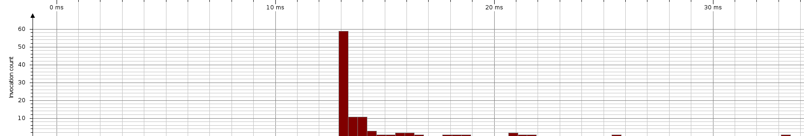

| Session: | Tarea2 |
| Time of export: | Monday, November 5, 2012 12:24:33 PM CLST |
| JVM time: | 01:15 |
| Method: | Kruskal. |
Total Time: | 1,435 ms | Invocations: | 100 | Average Time: | 14,355 µs | Median Time: | 13,300 µs | Minimum Time: | 13,010 µs | Maximum Time: | 33,283 µs | Standard Deviation: | 2,879 µs | Outlier Coefficient: | 1. |
|  |
| Call duration |